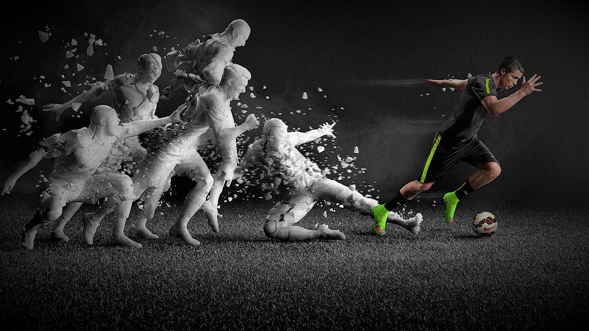

<!DOCTYPE html>
<html lang="en"></html>
<html>
  <head>
    <meta charset="UTF-8" />
    <meta name="viewport" content="width=device-width, initial-scale=1.0" />
    <title>Cristiano Ronaldo</title>
    <link rel="stylesheet" href="style.css" />
    <link
      rel="stylesheet"
      href="https://fonts.googleapis.com/css?family=Audiowide"
    />
    <link rel="preconnect" href="https://fonts.googleapis.com" />
    <link rel="preconnect" href="https://fonts.gstatic.com" crossorigin />
    <link
      href="https://fonts.googleapis.com/css2?family=Overpass:wght@300&display=swap"
      rel="stylesheet"
    />

    <div class="nav-bar">
      <div class="border">Home</div>
      <div class="border">About</div>
      <div class="border">Club Career</div>
      <div class="border">achievements</div>
      <div class="border">More Info</div>
    </div>
  </head>
  <body>
    <div id="main">
      <h1 id="title">Cristiano Ronaldo</h1>
      <div id="img-div">
        
        <p id="img-caption" class="center">
          <em>One of the Greatest Footballer Ever.</em>
        </p>
      </div>
      <div class="about sec-title">About</div>
      <div class="about-info">
        <h2>Early Life</h2>
        <p>
          Cristiano Ronaldo dos Santos Aveiro, born on February 5, 1985, in
          Funchal, Madeira, Portugal, grew up in the parish of Santo António.
          The youngest of four children, he was raised in a humble household by
          his mother, Maria Dolores, a cook and cleaning woman, and his father,
          José Dinis, a municipal gardener and part-time kit man for Andorinha
          football club. Ronaldo's great-grandmother on his father's side was
          from Cape Verde. Named after Ronald Reagan, Ronaldo faced challenges,
          including his mother's initial intention to abort him due to poverty
          and his father's alcoholism.
        </p>
        <h2>Football Journey</h2>
        <p>
          He began his football journey with Andorinha and Nacional before
          joining Sporting CP's youth system at age 12. By 14, he focused solely
          on football, quitting school despite struggles and an expulsion
          incident. Diagnosed with tachycardia at 15, he underwent successful
          heart surgery and continued his career. Ronaldo idolized Brazilian
          footballers Ronaldinho and Ronaldo Nazário, who influenced his passion
          for the sport. His mother later remarked that without football,
          Ronaldo might have become a bricklayer.
        </p>
        <br />
        <figure class="quote">
          <blockquote>
            <b
              >Dreams are not what you see in your sleep, dreams are things
              which do not let you sleep.</b
            >
          </blockquote>
          <figcaption>&mdash; Cristiano Ronaldo</figcaption>
        </figure>
        <br />
        <div class="line">
          <h2>Personal Life</h2>
          <p>
            Ronaldo is a father to five children. He is known for his
            philanthropic efforts, including donations to hospitals and
            children's charities. Off the field, he is a successful entrepreneur
            with ventures in fashion, fragrances, and hotels.
          </p>
        </div>
      </div>
    </div>
    <div class="sec-title">
      <p id="img-caption" class="center">
        <em>Club Career</em>
      </p>
    </div>
    <div class="club-career">
      <div class="club border2">
        
        <ul>
          <li style="font-size: 20px; font-family: 'Audiowide', sans-serif">
            Sporting CP (2002-2003)
          </li>
          <li style="margin-top: 10px">
            Ronaldo's professional career began at Sporting CP, where he
            impressed with his speed, skill, and goal-scoring ability.
          </li>
        </ul>
      </div>

      <div class="club border2">
        
        <ul>
          <li style="font-size: 20px; font-family: 'Audiowide', sans-serif">
            Manchester United (2003-2009)
          </li>
          <li style="margin-top: 10px">
            In 2003, Ronaldo signed with Manchester United. Under the guidance
            of Sir Alex Ferguson, he transformed from a promising young talent
            into one of the world's best players. He won three Premier League
            titles, a Champions League, and numerous individual awards,
            including his first Ballon d'Or in 2008.
          </li>
        </ul>
      </div>

      <div class="club border2">
        
        <ul>
          <li style="font-size: 20px; font-family: 'Audiowide', sans-serif">
            Real Madrid (2009-2018)
          </li>
          <li style="margin-top: 10px">
            Ronaldo's transfer to Real Madrid for a then-record fee of €94
            million marked the beginning of an extraordinary era. He became the
            club's all-time leading scorer with 450 goals in 438 appearances.
            Ronaldo won four Champions League titles, two La Liga titles, and
            four more Ballon d'Or awards during his time at Madrid.
          </li>
        </ul>
      </div>

      <div class="club border2">
        
        <ul>
          <li style="font-size: 20px; font-family: 'Audiowide', sans-serif">
            Juventus (2018-2021)
          </li>
          <li style="margin-top: 10px">
            In 2018, Ronaldo joined Juventus, where he continued to showcase his
            incredible talent. He helped the team secure two Serie A titles and
            contributed significantly to their overall success.
          </li>
        </ul>
      </div>

      <div class="club border2">
        
        <ul>
          <li style="font-size: 20px; font-family: 'Audiowide', sans-serif">
            Return to Manchester United (2021-2022)
          </li>
          <li style="margin-top: 10px">
            Ronaldo returned to Manchester United in 2021, bringing his
            experience and goal-scoring prowess back to Old Trafford. He
            continued to break records and score important goals.
          </li>
        </ul>
      </div>

      <div class="club border2">
        
        <ul>
          <li style="font-size: 20px; font-family: 'Audiowide', sans-serif">
            Al Nassr (2022-Present)
          </li>
          <li style="margin-top: 10px">
            In late 2022, Ronaldo made a high-profile move to Saudi Arabian club
            Al Nassr. Despite being in the latter stages of his career, he
            remains a pivotal figure in the team, both on and off the pitch.
          </li>
        </ul>
      </div>
    </div>

    <div class="sec-title">
      <p id="img-caption" class="center">
        <em>Records and Achievements</em>
      </p>
    </div>
    <div class="achievements">
      <div class="award1 border3">
        <ul>
          <li style="font-size: 20px; font-family: 'Audiowide', sans-serif">
            Individual Awards
          </li>
          <li style="margin-top: 10px">
            5 Ballon d'Or awards (2008, 2013, 2014, 2016, 2017)
          </li>
          <li style="margin-top: 10px">
            Numerous Golden Boot awards and other accolades for his goal-scoring
            feats.
          </li>
        </ul>
      </div>

      <div class="award2 border3">
        <ul>
          <li style="font-size: 20px; font-family: 'Audiowide', sans-serif">
            Club Records
          </li>
          <li style="margin-top: 10px">
            All-time leading scorer for Real Madrid.
          </li>
          <li style="margin-top: 10px">
            Top scorer in UEFA Champions League history.
          </li>
        </ul>
      </div>

      <div class="award3 border3">
        <ul>
          <li style="font-size: 20px; font-family: 'Audiowide', sans-serif">
            International Records
          </li>
          <li style="margin-top: 10px">
            Most goals scored in international football history.
          </li>
        </ul>
      </div>
    </div>

    <div class="more-info sec-title">For more information</div>
    <a
      href="https://en.wikipedia.org/wiki/Cristiano_Ronaldo"
      target="_blank"
      id="tribute-link"
      >Learn more about Cristiano Ronaldo.</a
    >
    <footer>
      <div class="foot-panel1">
        
        <ul>
          <li>Wafi Wahid</li>
          <li>Web Development Internship at Oasis Infobyte</li>
          <li>Level 2, Task2</li>
          <li>Tribute Page using HTML, CSS</li>
          <li>Email: wafi.wahid26@gmail.com</li>
          <li>
            <a
              href="https://github.com/Wafi-wahid/OIBSIP/tree/afe3cca64b33da4b27b356d5bc69464f5a5ed85a/Oasis%20Webdevelopment/Tribute%20Page%20Ronaldo"
              >Link to git repository</a
            >
          </li>
        </ul>
      </div>
      <div class="foot-panel2">
        <div class="foot-copyright">
          © Copyright, Wafi Wahid, Tribute Page Ronaldo
        </div>
      </div>
    </footer>
  </body>
</html>
